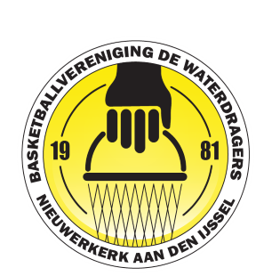
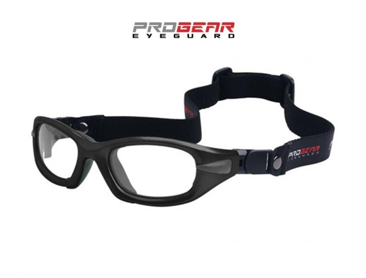

Basketbal vind ik één van de leukste sporten die er bestaan.
Ik heb ongeveer zes jaar gebasketbald in de vereniging 'de Waterdragers'.
De Waterdragers is een kleine basketbal vereniging in Nieuwerkerk a/d IJssel.
Ik heb van de U-10 tot aan de U-18 gespeeld en ik ben zelfs een keer kampioen geworden.
Niet alleen speel basketbal tijdens trainingen en wedstrijden, maar speel ik ook basketbal in mijn vrije tijd.

Net als bij andere sporten, bespeel je de sport niet zonder risico's.
Zo kun je veel blessures oplopen bij het spelen basketbal.
Zelf is mijn vinger gekneusd geraakt en heb ik ook een rugblessure opgelopen.
Ook is er een kans dat er een bal op je gezicht komt.
Dat is vooral voor mensen met een bril vervelend.
Je bril kan kapot gaan en je kan wonden krijgen doordat je bril tegen het gezicht aankomt.
Daarom heb ik een sportbril (zie bijlage 1) waarbij dat kan voorkomen.
